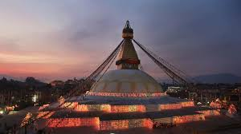
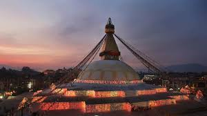

Swayambhunath Stupa, also known as the Monkey Temple, is a UNESCO World Heritage Site located on a hilltop in Kathmandu, Nepal. The stupa is one of the oldest and most sacred Buddhist sites in Nepal and is believed to have been established over 2,000 years ago.
According to legend, the stupa was built by the great-grandfather of King Manadeva, who ruled the Kathmandu Valley in the 5th century AD. The stupa was later renovated in the 14th century after it was damaged by invading Mongol armies.
The stupa's name comes from the Sanskrit words "Swayambhu" which means "self-created" or "self-existent," and "nath" which means "lord." The stupa is considered a symbol of enlightenment and a pilgrimage site for Buddhists.
The stupa is adorned with colorful prayer flags, prayer wheels, and hundreds of Buddha statues. The stupa's eyes are painted on each of the four sides, and they represent wisdom and compassion. The base of the stupa is surrounded by 108 small shrines, and visitors can climb a staircase of 365 steps to reach the top of the hill.
One of the unique features of Swayambhunath Stupa is the population of monkeys that live in and around the stupa. The monkeys are considered sacred and are believed to be the descendants of the monkey-god Hanuman.
Overall, Swayambhunath Stupa is a significant cultural and religious site in Nepal and a must-visit destination for those interested in Buddhism and Nepalese culture.